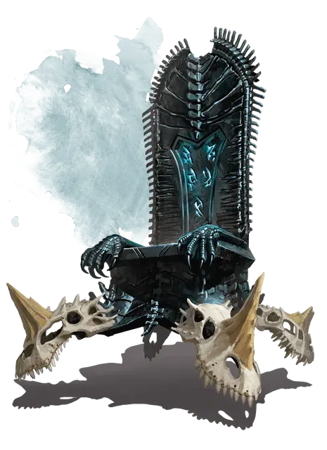

Трон драконьих черепов
Wyrmskull Throne
Чудесный предмет, артефакт

Дварфские боги сделали и доверили правителями Шанатара, древней дварфской империи, трон драконьих черепов, ставший символом дварфской силы и гордости на долгие века. Огромный трон сделан из полированного обсидиана, инкрустирован черепами четырех древних синих драконов и парит в футе над землей. Резные руны поблескивают в обсидиане, помигивая синей энергией, когда активируются способности трона.
После падения Шанатара, трон драконьих черепов оказался в лапах менее благородных существ. Шайка авантюристов стянула трон у водного эльфа тирана Гантара Краока и продала его штормовому гиганту Нери за целое состояние. Нери увеличила трон магией и отдала его своему мужу, королю Гекатону, в качестве подарка вместе с одним из правящих скипетров Шанатара, найденным ей среди обломков на дне Бесследного моря. Только существо, обладающее правящим скипетром, может использовать силу трона драконьих черепов, ставшего краеугольным камнем в тронном зале подводной цитадели Вихря короля Гекатона. Страх перед мощью трона помогал предотвратить оспаривание злыми гигантами власти Гекатона.
Любое существо, которое не настроено на правящий скипетр, садясь на трон, становится парализовано и заключается в волшебное силовое поле. Запечатанное существо нельзя тронуть или передвинуть с трона. Касание правящим скипетром силового поля рассеивает его, хотя существо остается парализовано, пока не будет отделено от трона.
Любое существо, сидящее на троне, слышит тихий шепот на драконьем языке — шепот синих драконов, черепа которых украшают трон. Хотя они и бессильны, эти духи пытаются влиять на решения хозяина трона.
Свойства трона. Трон имеет 9 зарядов, которые он восстанавливает ежедневно на рассвете. Сидящее на нем существо, обладающее Правящим скипетром, может воспользоваться следующими его свойствами:
- Трон получает скорость полёта 30 футов и может парить на месте или лететь туда, куда желает существо на нём. Это свойство не расходует заряды.
- И трон, и сидящее на нем существо получает возможность двигаться через землю и камень, не беспокоясь о том, через какой материал проходит. Это свойство не тратит заряды.
- Действием вы можете потратить 1 заряд из трона, чтобы наложить заклинание молния [lightning bolt] (Сл спасброска 19) с помощью трона. Заклинания накладывается как из ячейки 9 уровня и наносит 49 (14к6) урона электричеством. Заряд вылетает изо рта одного из черепов синих драконов на троне.
- Действием существо может потратить 2 заряда, чтоб активировать заклинание сфера неуязвимости [globe of invulnerability]. Сфера окутывает и трон, и существо на нем.
- Действием существо может потратить 3 заряда, чтоб создать спектральное изображение древнего синего дракона, окружающего и само существо, и трон. Спектральный дракон остается на 1 минуту.
- В конце каждого хода существа, спектральный дракон совершает одну атаку укусом и две когтями против целей на выбор самого существа. Эти атаки имеют тот же бонус атаки, досягаемость и урон, что и укус, и атаки когтями у древнего синего дракона [ancient blue dragon].
Уничтожение трона. Трон драконьих черепов может быть уничтожен, если разбить на нем одновременно по меньшей мере пять Правящих скипетров Шанатара. Этот факт никогда не был записан или воспет дварфами, бардами или другими любителями историй, его нельзя узнать проверкой характеристики.
Персонажи, решившие уничтожить трон, должны отправиться в путешествие, чтоб узнать этот способ.
Разрушение трона вызывает взрыв, осколки обсидиана летят во все стороны. Каждое существо или объект в пределах сферы радиусом 30 футов с центром на троне, должно пройти спасбросок Ловкости Сл 21, получая 70 (20к6) рубящего урона или или половину урона при успехе.